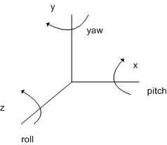

description: D3DXMatrixRotationYawPitchRoll function (D3dx9math.h) - Builds a matrix with a specified yaw, pitch, and roll. ms.assetid: efaab508-34ed-4373-a8d0-3bc459d75f39 title: D3DXMatrixRotationYawPitchRoll function (D3dx9math.h) ms.topic: reference ms.date: 05/31/2018 topic_type:
[!Note] The D3DX utility library is deprecated. We recommend that you use DirectXMath instead.
Builds a matrix with a specified yaw, pitch, and roll.
D3DXMATRIX* D3DXMatrixRotationYawPitchRoll(
_Inout_Â D3DXMATRIX *pOut,
_In_Â Â Â Â FLOAT Â Â Â Â Â Yaw,
_In_Â Â Â Â FLOAT Â Â Â Â Â Pitch,
_In_Â Â Â Â FLOAT Â Â Â Â Â Roll
);
pOut [in, out]
Type: D3DXMATRIX*
Pointer to the D3DXMATRIX structure that is the result of the operation.
Yaw [in]
Type: FLOAT
Yaw around the y-axis, in radians.
Pitch [in]
Type: FLOAT
Pitch around the x-axis, in radians.
Roll [in]
Type: FLOAT
Roll around the z-axis, in radians.
Type: D3DXMATRIX*
Pointer to a D3DXMATRIX structure with the specified yaw, pitch, and roll.
The return value for this function is the same value returned in the pOut parameter. In this way, the D3DXMatrixRotationYawPitchRoll function can be used as a parameter for another function.
The order of transformations is roll first, then pitch, then yaw. Relative to the object's local coordinate axis, this is equivalent to rotation around the z-axis, followed by rotation around the x-axis, followed by rotation around the y-axis, as shown in the following illustration.

| Requirement | Value |
|---|---|
| Header | D3dx9math.h |
| Library | D3dx9.lib |
Â
Â